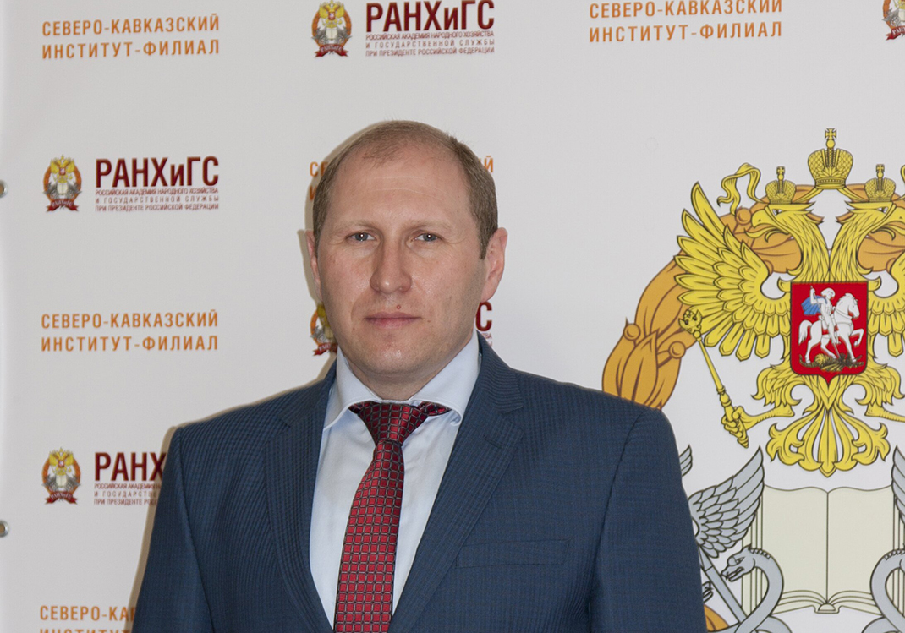

Всероссийская перепись населения пройдет с 15 октября по 14 ноября 2021 года
Предварительные итоги Всероссийской переписи населения будут подведены в апреле 2022 года
Азамат Тлисов, член Общественной палаты РФ, директор Северо-Кавказского института-филиала РАНХиГС при Президенте Российской Федерации:
Буквально на днях стало известно о сроках
проведения переписи 2021 года, которая, как
мы помним, в связи со сложными
обстоятельствами, связанными с пандемией, была
перенесена с 2020 года. Очень хорошо, что
сейчас нам удается вернуться к сбору этих очень
важных для развития страны данных о структуре
населения, его основных показателях: национальном
составе, возрастном составе и т.д. Именно перепись
дает возможность моментального снимка общества, состава
населения государства. Эти данные очень полезны
в дальнейшем для целого ряда исследования,
выработки программ развития. Еще одним важным элементом
является то, что мы видим, какие реализуемые
программы дают должный эффект. Поэтому, на мой
взгляд, участие в переписи необходимо.
В каждом регионе эта работа будет реализована при
поддержке и больших команд волонтеров, и, конечно,
специалистов Росстата. Еще один важный момент, как мне
представляется, — в этом году у нас
появилась возможность заполнять информацию дистанционно
с использованием портала госуслуг. Это —
новый инструмент, позволяющий повысить удобство для
самих граждан с одной стороны, а с другой
стороны повысить оперативность получения этих данных.
Безусловно, как традиционно это бывает, для
труднодоступных территорий сроки переписи будут
несколько продлены, но уже в апреле следующего
года мы получим первые обобщенные данные. Это
позволит корректировать и реализовывать,
а также вносить на рассмотрение новые
программы для того, чтобы повысить качество жизни наших
граждан.